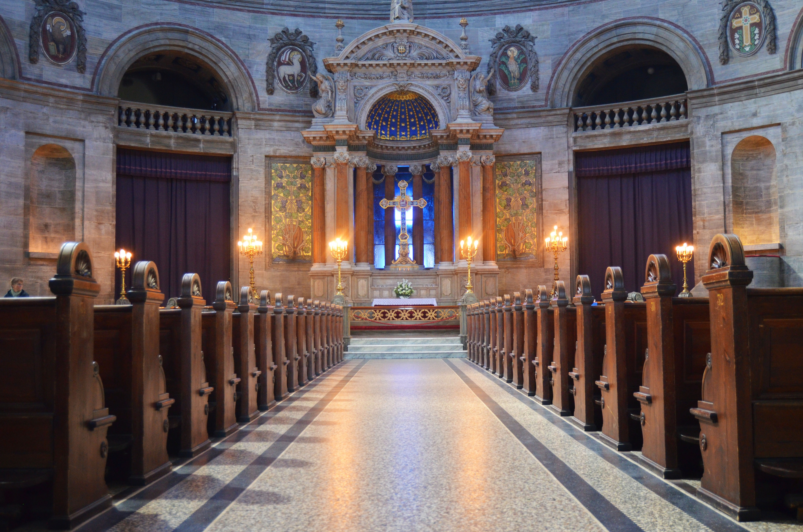
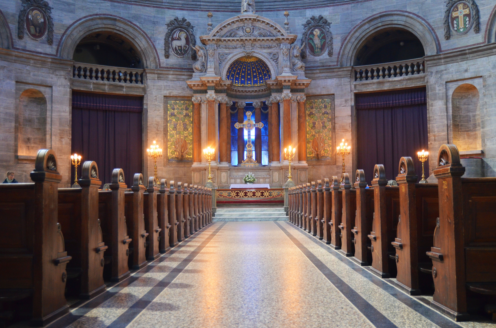

The Marble Church is a church in the parish of Frederik, with the original name The Frederik’s
Church. It is located in Frederiksstaden in the capital of Denmark, Copenhagen. The church was drawn
and built in the year of 1740 by the court building contractor, Nicolai Eigtved, under the reign of
Frederik V. In the years from 1750-1754 there were made multiple drawings of which the Church
Building Commision was not pleased with. Some other architect was to draw some drafts for the church
and what they all had in common was the basic plan, a central round church room with two bell towers
and temple entries from both east and west.
The church is mainly built of Norwegian marble, the upper parts are made of multiple materials
including Danish Faxe marble. The church is 46 meters high with 12 pillars to carry the dome. The
dome has a diameter of 31 meter. Around the Church there are placed a lot of statues that represent
well-known people of the Danish Church, fx Ansgar “The Apostle of Denmark” and some Danish hymn
writers such as Brorson and Grundtvig. On the rooftop stands more statues of important general
figures from history such as Moses and Martin Luther.
"Frederiks kirke - Marmorkirken 11/5 - 2022
https://kirker.dk/item/frederiks-kirke-marmorkirken/"
History 11/5 - 2022
https://www.marmorkirken.dk/history
 

Click on the map for navigation: